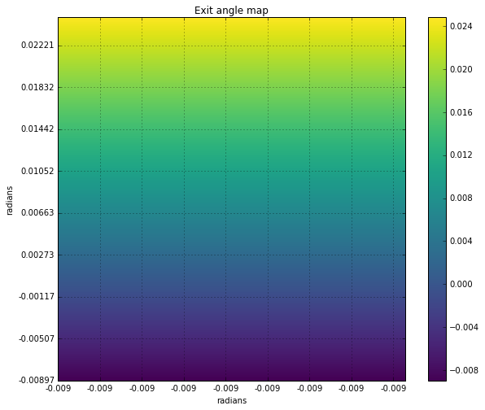
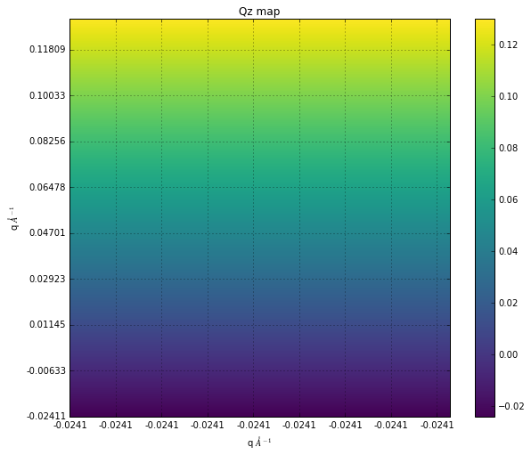
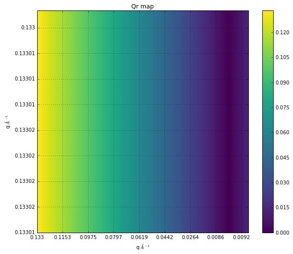

GISAXS (Grazing-incidence small angle X-ray scattering geometry)
More details skbeam.core.recip module: gisaxs function.
Incident Angle
Tilt Angle
x_ticks = []
y_ticks = []
for i in range(0, 2250, 250):
x_ticks.append(round(g_output.alpha_f[0, i], 4))
y_ticks.append(round(g_output.alpha_f[i, 0], 5))
fig, ax = plt.subplots(figsize=(10, 8))
im = ax.imshow(g_output.alpha_f, cmap="viridis", origin="lower")
ax.set_title("Exit angle map")
ax.set_xlabel('radians')
ax.set_ylabel('radians')
ax.set_xticks(np.arange(0, 2250, 250))
ax.set_xticklabels(x_ticks)
ax.set_yticks(np.arange(0, 2250, 250))
ax.set_yticklabels(y_ticks)
ax.grid()
fig.colorbar(im)
plt.show()

Qz map ( z component of scattering wave vector)
x_ticks = []
y_ticks = []
for i in range(0, 2250, 250):
x_ticks.append(round(g_output.qz[0, i], 4))
y_ticks.append(round(g_output.qz[i, 0], 5))
fig, ax = plt.subplots(figsize=(10, 8))
im = ax.imshow(g_output.qz, cmap="viridis", origin="lower")
ax.set_title("Qz map")
ax.set_xlabel('q 'r'$\AA^{-1}$')
ax.set_ylabel('q 'r'$\AA^{-1}$')
ax.set_xticks(np.arange(0, 2250, 250))
ax.set_xticklabels(x_ticks)
ax.set_yticks(np.arange(0, 2250, 250))
ax.set_yticklabels(y_ticks)
ax.grid()
fig.colorbar(im)
plt.show()

Qr (parrell component of the scattering wave vector)
xr_ticks = []
yr_ticks = []
for i in range(0, 2250, 250):
xr_ticks.append(round(g_output.qr[0, i], 4))
yr_ticks.append(round(g_output.qr[i, 0], 5))
fig, ax = plt.subplots(figsize=(10, 8))
im = ax.imshow(g_output.qr, cmap="viridis", origin="lower")
ax.set_title("Qr map")
ax.set_xlabel('q 'r'$\AA^{-1}$')
ax.set_ylabel('q 'r'$\AA^{-1}$')
ax.set_xticks(np.arange(0, 2250, 250))
ax.set_xticklabels(xr_ticks)
ax.set_yticks(np.arange(0, 2250, 250))
ax.set_yticklabels(yr_ticks)
ax.grid()
fig.colorbar(im)
plt.show()

import skbeam
skbeam.__version__